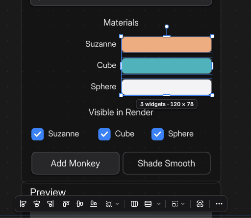
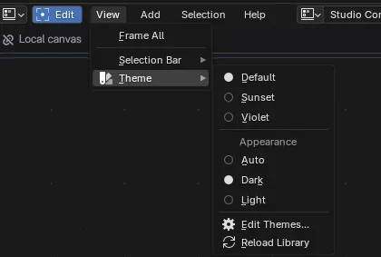

Everything on this page happens in Edit Mode (Tab).
Select#
- Click a widget to select it.
- Shift click adds it to the selection. Shift click the active one to deselect it.
- Drag on empty space to box select. Click empty space to deselect all.
- A selects all.
Move, resize, rotate#
- Drag a widget to move it.
- G moves the selection, R rotates it, S scales it, Alt+R clears the rotation.
- The arrow keys nudge by 10 units, Shift + arrow by 1.
- The handles around the selection resize it (edges and corners) and rotate it (the round knob).
- Hold Alt to show the pivot and drag it.
While you transform, the status bar lists the keys. The main ones:
- X / Y lock an axis.
- Shift keeps or frees the aspect ratio (resize), snaps to 15 degrees (rotate) or is finer (scale).
- Alt resizes from the centre.
- Ctrl snaps or, with smart snapping on, drags free.
- Type a number for an exact value.
- Enter confirms, Esc or right-click cancels.
 Screenshot
ScreenshotSmart snapping#
The magnet in the header turns snapping on or off for this canvas. Its arrow opens the settings:
- Snap To: edges, centres, spacing (equal gaps) and the grid (with its Grid Size).
- Snap Distance and Show Guides (the lines that show what you snapped to).

 Screenshot
ScreenshotDuplicate, copy, delete#
- Shift+D duplicates and moves the copy.
- Ctrl+C copies the selected widgets. A group or Flex Box is copied with what is inside it, a frame with its widgets.
- Ctrl+V pastes them under the mouse, on the active layer, and you move them like after Shift+D. A click places them, Esc leaves them under the mouse.
- X or Delete deletes.
Copy and Paste are also in the Selection menu and the right-click menu. Paste from the right-click menu puts the widgets where you right-clicked; from the Selection menu, in the middle of the view. Once something is copied, a right-click with nothing selected opens a menu with just Paste. The status bar says how many widgets were copied or pasted, or why nothing was copied.
What you copy stays copied until you copy again:
- Paste as many times as you like. Each paste is a new copy with its own settings, operator arguments included.
- A Script button is pasted with its script as it was when you copied it, in a new text of its own.
- Paste into another canvas of the same kind: Flex Space widgets go into Flex Space canvases, picker widgets into picker canvases. The status bar says when the kinds don't match.
- The copy is kept even if you delete the original widgets or open another file.
- A widget copied without its group, Flex Box or frame is pasted on its own.
Ctrl+Z undoes a paste in one step.
Groups#
A group moves, rotates and resizes several widgets as one. It has no graphic of its own.
- Ctrl+G groups the selection, Alt+G ungroups it.
- Double-click a group to enter it and select one of its widgets. Double-click again to go into a group inside it.
- Esc or a click outside leaves the group.
- Ctrl click picks one widget inside a group without entering it first.
- Shift+A inside an open group adds the new widget to that group.
Frames#
A frame is a titled area that owns the widgets in it: moving it moves them.
- Ctrl+J frames the selection.
- Alt+P removes widgets from their frame.
- Drop a widget inside a frame to add it.
- With Shrink on, the frame fits its contents.
Selection Bar#
With two or more widgets (or a group) selected, a bar appears at the bottom of the canvas:
- Align left, centre, right, top, middle, bottom, and Align To (the selection bounds, the active widget or the canvas origin).
- Distribute horizontally or vertically.
- Size: match or normalize sizes.
- Group and Ungroup, and More for the rest of the Selection menu.
Good to know:
- Hover a button to see what it does, and why a greyed one can't.
- The bar moves to the top when the selection is under it.
- Choose where it shows, or turn it off, in View > Selection Bar (also in the add-on preferences).
- The same tools are in the header Selection menu and the right-click menu, with Order (bring forward, send back) and Match Rotation.


ScreenshotRight-click menu#
Right-click a selection for the context menu: frames, Flex Box, groups, order and Delete.
Minimap#
The picture button in the header shows the minimap, a small map of the whole canvas. Its arrow sets when it shows (Edit Mode, Live Mode), its Corner, its Size and whether it draws the widgets.
- Click the map to centre the view there, drag to pan.
- Double-click frames every widget, the wheel zooms.
- Drag its corner grips to move it to another corner or resize it.
 Screenshot
ScreenshotThemes#
The theme sets the colours, shapes and type of every widget, on every canvas.
- Pick a theme from View > Theme in the header.
- The same menu has Appearance (Auto follows Blender's theme, Dark, Light), Edit Themes... and Reload Library.


ScreenshotTo make your own theme:
- Open Edit Themes... (the Themes section of the add-on preferences).
- Make a New Theme (a copy of Default) or Duplicate the active one.
- Change it.